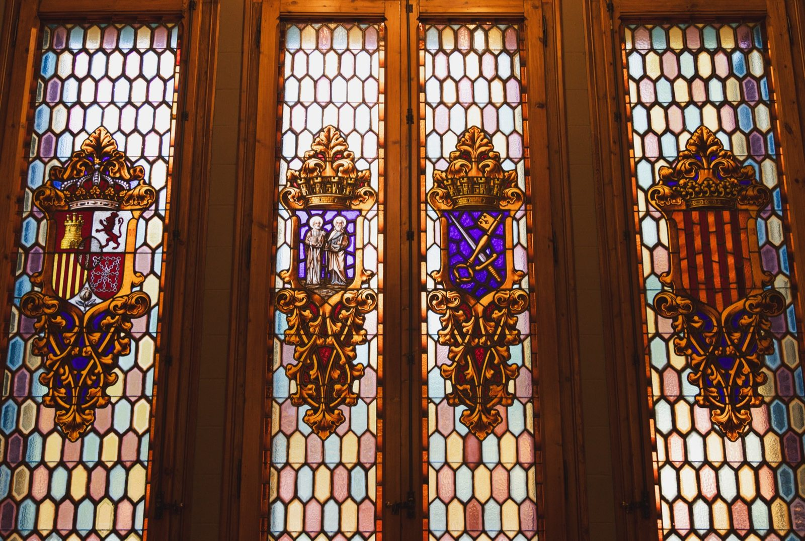
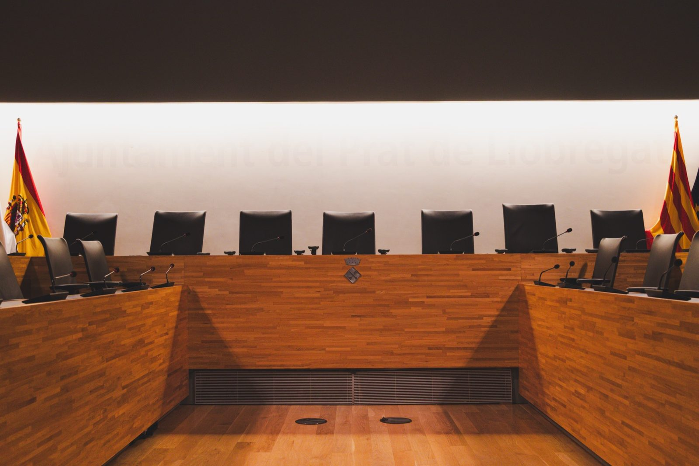
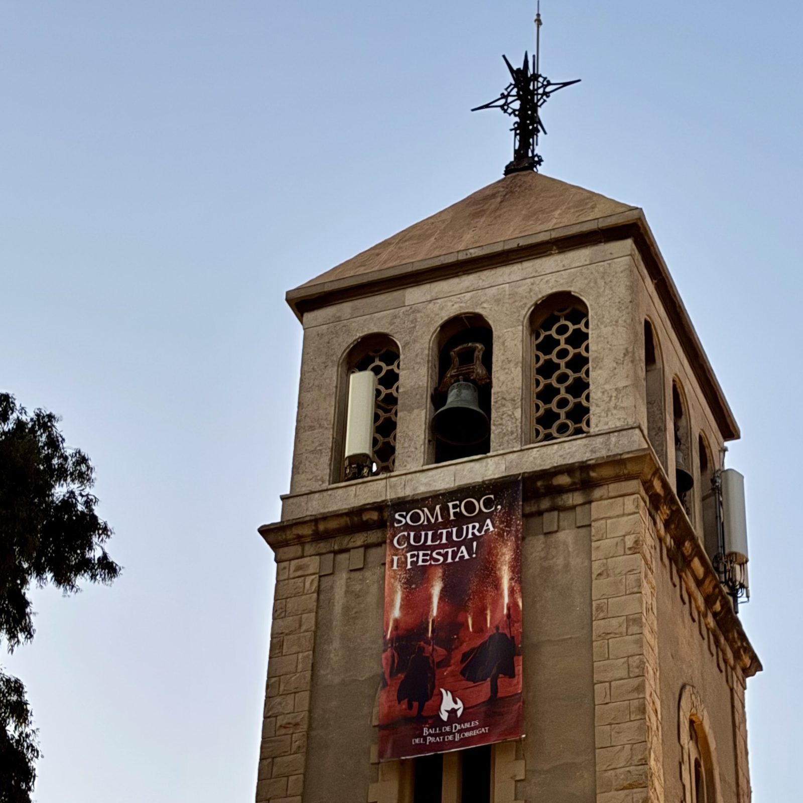
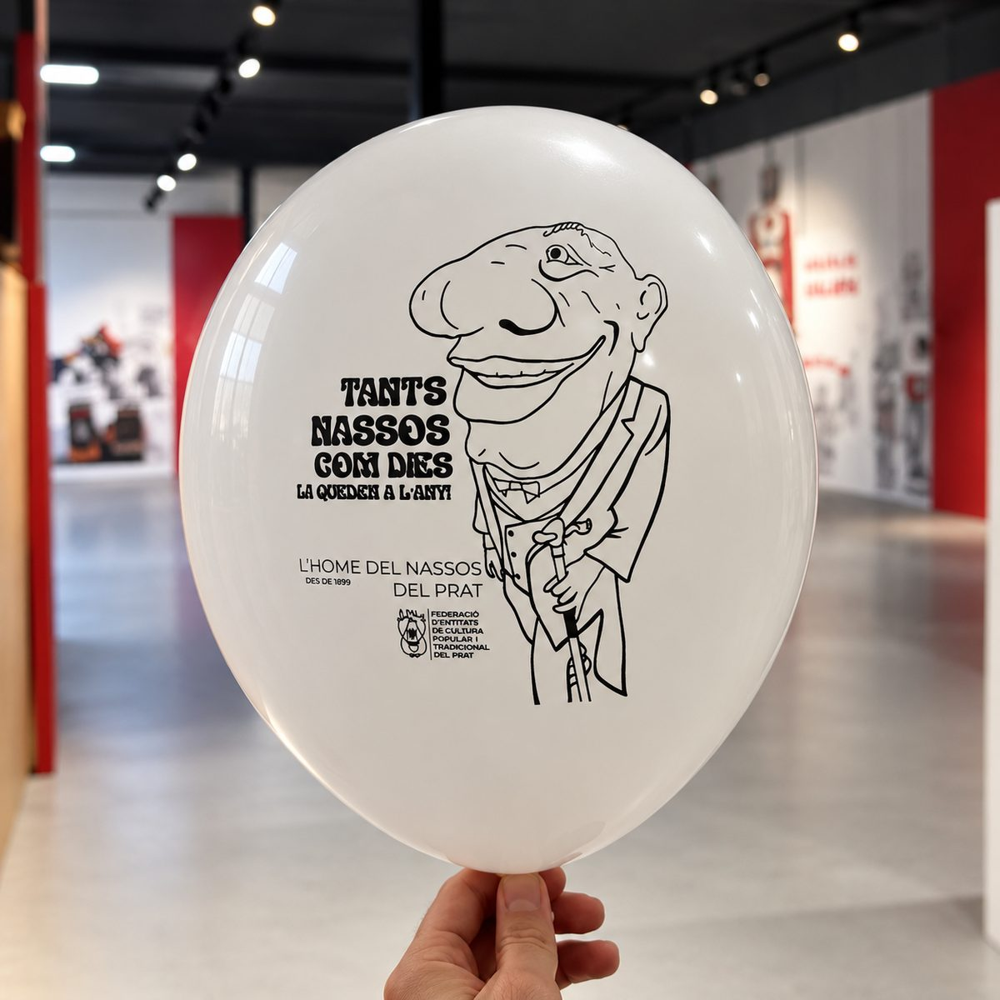
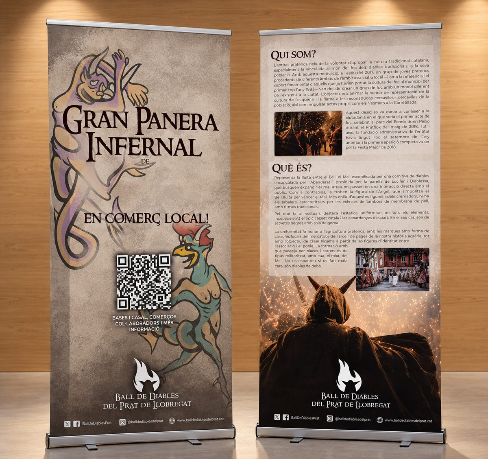
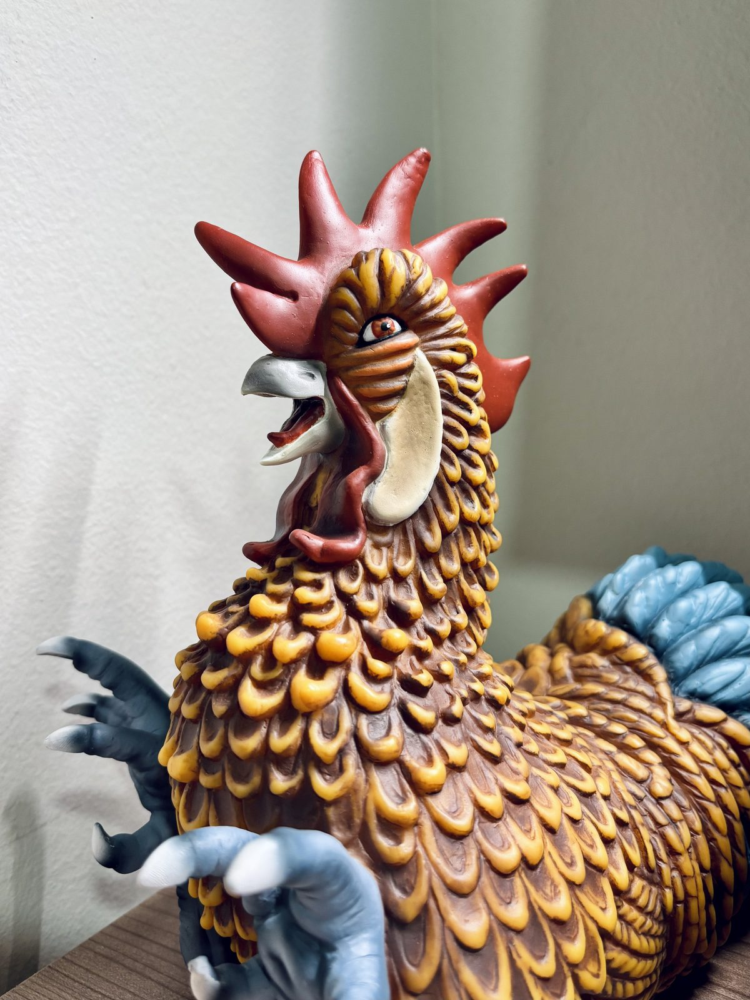

Construeixo webs i eines digitals a mida: ràpides, cuidades i pensades perquè funcionin de debò per al teu projecte.
Disseny, desenvolupament, integracions, IA, SEO i manteniment. Tot amb una sola persona.
Ràpides, cuidades i fetes a mida, sense plantilles, optimitzades per a mòbil i SEO des de la base.
Backoffice, reserves, clients o alumnes centralitzats. Menys Excels solts, més control.
Connecto la teva web amb CRM, ERP, pagaments, reserves o mapes. Dades sincronitzades i zero feina manual duplicada.
Integro IA on de debò estalvia temps (classificar, respondre, corregir), no com a moda. Fluxos que treballen sols.
SEO tècnic, dades estructurades i contingut preparat per a Google i per a les respostes de la IA.
Còpies de seguretat, actualitzacions provades, monitoratge i suport directe amb mi.
Una selecció de projectes reals: webs a mida, eines internes, audiovisual i disseny.
Web, campus virtual i un panell intern que centralitza alumnes, pagaments i professorat. Amb correcció automàtica d'exercicis amb IA que l'equip fa servir cada dia.
Projecte privatAplicació de gestió de finances personals amb estadístiques, categories personalitzades, despeses recurrents i objectius d'estalvi.
Veure projecte →Web a mida per a l'escultor del Prat especialitzat en imatgeria festiva i religiosa: un espai per mostrar la seva obra, la creació de figures i la tasca de restauració del patrimoni.
Veure projecte →Web corporativa per a una consultoria de persones, estratègia i talent. Presenta els seus serveis de desenvolupament directiu, selecció i coaching executiu amb un disseny net i professional.
Veure projecte →Renovació completa de la web de l'entitat cultural: disseny modern, millor experiència d'usuari i una imatge fidel a la identitat del Ball.
Veure projecte →Landing de presentació i venda d'una app pròpia de finances personals: funcionalitats, plans de subscripció i captació d'usuaris.
Veure projecte →Estratègia de contingut i gestió de comunitat per a entitats culturals i educatives.
Vídeos promocionals per difondre la cultura popular del Prat.
Moments, llums i textures del món que m'envolta.


Materials gràfics per a esdeveniments i entitats culturals.




Creador multidisciplinari que fusiona art i tecnologia.